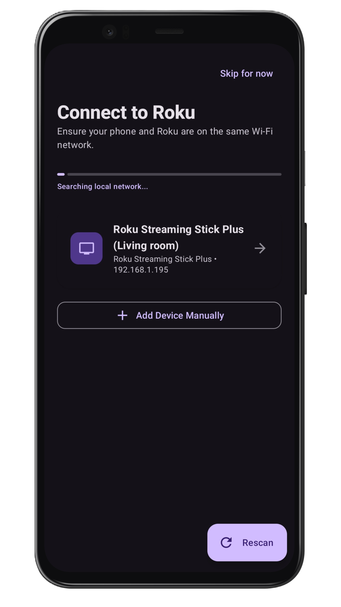

How to Program Your Roku Remote App to Your TV
Have you been searching for a Roku remote code or wondering how to program your roku remote app to your tv? The good news is that unlike traditional universal remotes, most Roku remote apps do not require any programming codes. They connect via your Wi-Fi network for a much faster setup.
Do Roku Remote Apps Need Programming Codes?
No.
A Roku remote app does not use the four-digit or five-digit programming codes commonly required by universal remotes. Instead, the app communicates with your Roku TV over your home Wi-Fi network. This "direct-to-device" communication is why a roku remote app with no ads on the control tab is often the preferred choice for daily use.
How to Program a Roku Remote App to Your TV
Follow these steps to get your mobile remote up and running in minutes.
Step 1: Connect Your Roku TV to Wi-Fi
Ensure your Roku TV or streaming device is already connected to your home Wi-Fi network. To verify:
- Press the Home button on your Roku remote.
- Go to Settings > Network > About.
- Confirm the status says "Connected".
Step 2: Connect Your Phone to the Same Wi-Fi Network
Your Android phone must be on the exact same network. If your router has both 2.4GHz and 5GHz bands, try to ensure both devices are on the same one.
Step 3: Open the App & Enable Network Permissions
Launch the Roku TV Remote Control app. If prompted, allow the app to scan your local network. This is the modern way to "program" the remote without a code.
Step 4: Select Your Roku Device
The app will automatically discover available Roku devices. Tap your device name, and you are ready to go!

Troubleshooting: Why Isn't My Roku TV Showing Up?
If the app cannot find your TV, it's usually due to one of these three issues:
- Wrong Network: Double-check that your phone isn't on mobile data or a "Guest" Wi-Fi network.
- Device Needs a Restart: Perform a "System Restart" on your Roku TV via the Settings menu.
- The "Permissive" Fix: This is a big one. Go to Settings > System > Advanced System Settings > Control by Mobile Apps and ensure it is set to Permissive. This allows the app to communicate with the TV.
Benefits of Using a Roku Remote App
Beyond being a great free remote control for roku tv, apps offer features physical remotes can't match:
- Typing: Use your phone's keyboard for the roku onscreen keyboard.
- Speed: Instant response with no line-of-sight required.
- Convenience: You always have your phone with you; you'll never lose your remote again.

Frequently Asked Questions
What is the Roku remote programming code?
There isn't one for mobile apps. They use Wi-Fi. Only universal hardware remotes (like a Logitech or a cable box remote) require 4 or 5 digit codes.
Can I pair a Roku remote app without a code?
Yes, pairing is handled automatically over your Wi-Fi network once you select your device in the app.
Do I need the original Roku remote to set this up?
No, as long as your TV is already connected to Wi-Fi. If your TV isn't on Wi-Fi yet, you may need a remote (or the buttons on the TV) to join a network first.
Final Thoughts
Stop looking for how to program your roku remote app to your tv with codes. Embrace the convenience of a Wi-Fi connection. With our ad-free remote tab, you'll get a clean, fast experience that makes searching and navigating your Roku TV a breeze.